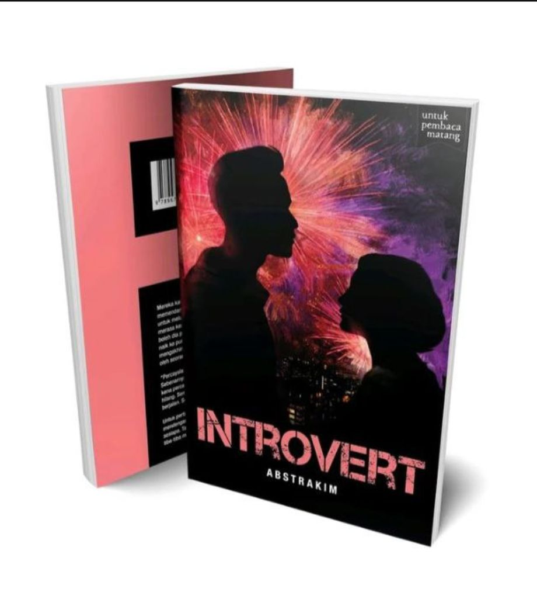
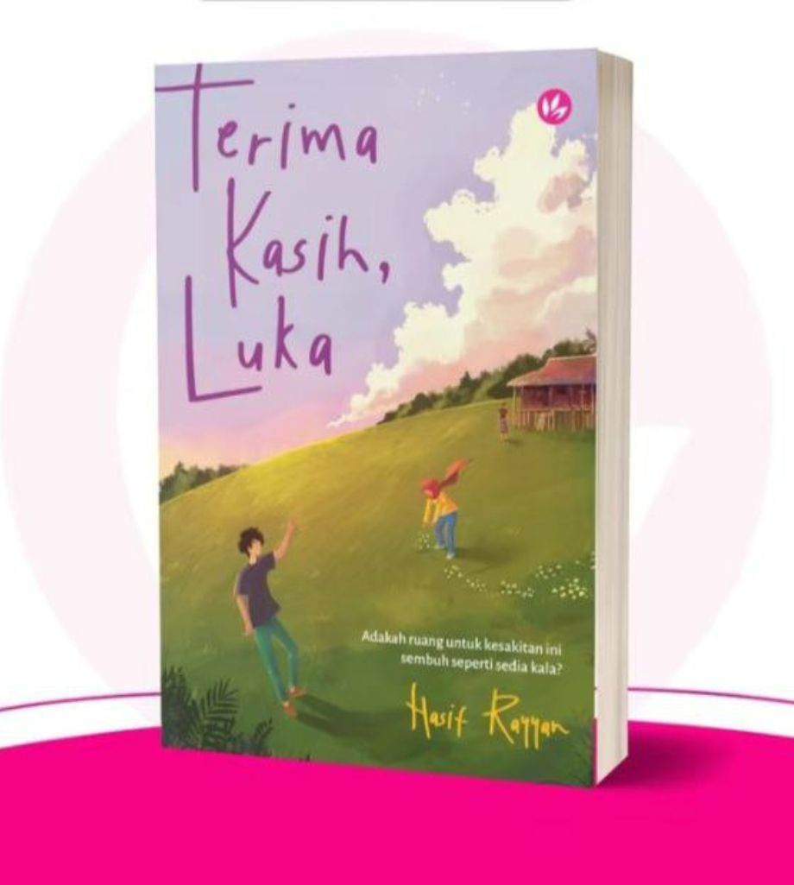
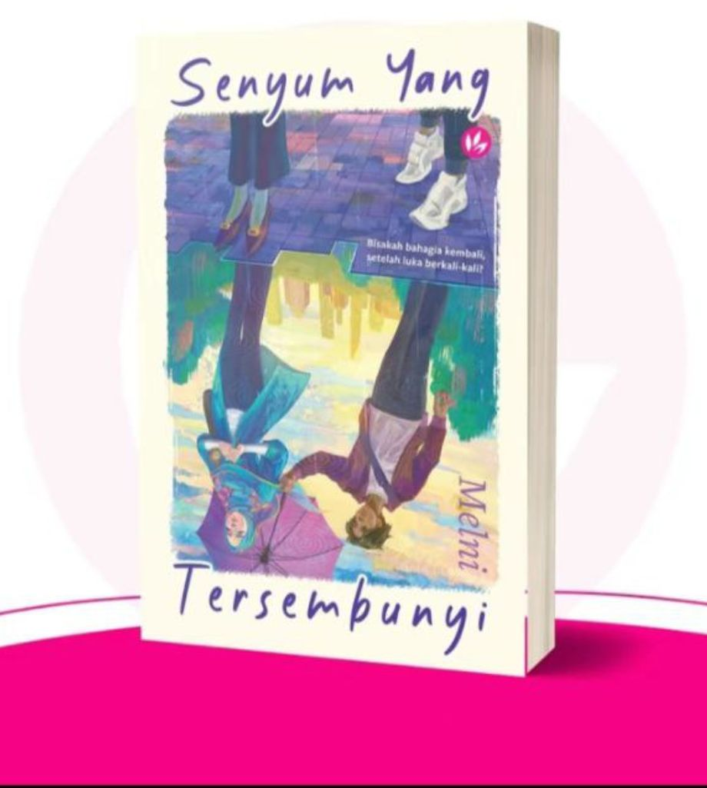

INTROVERT

Description
Mereka kata, orang introvert selalunya perahsia dan suka memendam perasaan. Farady mengaku dia memang sukar untuk meluahkan apa yang dia rasa. Sejak kecil dia selalu merasa kesunyian dan sukar untuk mencari rakan yang boleh dia percayai. Selepas ditimpa satu tragedi, Farady naik ke puncak Bangunan Alam dengan satu niat: dia ingin mengakhiri segala-galanya. Tapi hasratnya dipatahkan oleh seorang gadis misteri bernama Haura.
'Percayalah cakap aku. Kau nak hidup, kau tak nak mati. Sebenarnya, kau cuma tak nak rasa sakit lagi. Tapi kau kena percayakan aku. Rasa sakit ini semuanya akan hilang. Semuanya akan berakhir seiring dengan masa berjalan. Semuanya akan jadi lebih baik." - Haura. -
Untuk pertama kali, Farady rasa ada orang yang mendengar suara hatinya yang selama ini tidak didengari sesiapa. Tapi siapakah gerangan gadis misteri yang tiba-tiba muncul di atas bumbung bangunan tinggal itu?
TERIMA KASIH, LUKA

Sinopsis:
'Aku abah dia!"
'Sekarang ni baru terhegeh-hegeh nak mengaku abah. Selama ini, ada abah kisah pasal kami? Tak ada, kan?" Poji membentak, sinis.
***
Sejak pemergian ummi sejurus melahirkan Naura, nidup mereka sekeluarga berubah. Poji terpaksa mengurus rumah dan menjaga adiknya. Abah pula makin menjauh, seolah-olah tidak wujud. Hanya pulang ke rumah untuk makan dan tidur sahaja.
Terbeban, Poji memberontak mahu keluar dari rumah tu hingga membuatkan abahnya berang. Dek selalu tersepit dalam pergaduhan mereka, Naura semakin hari merasakan dirinya dibenci dan dilihat beban pada keluarga.
Hubungan antara Poji dan abah semakin tegang apabila Naura tiba-tiba menghilangkan diri. Abah langsung tidak boleh diharap!-Itu yang Poji rasakan. Sedangkan abahnya pula menyalahkan Poji kerana gagal menjaga Naura.
Luka yang selama ini dipendam, membuatkan masing-masing menyakiti tanpa sedar.
Seandainya nyawa menjadi taruhan, masih adakah ruang untuk Poji, abah dan Naura saling memaafkan kesakitan lalu?
SENYUM YANG TERSEMBUNYI

Sinopsis:
"Kalau kau asyik fikir nak bahagiakan orang lain, siapa akan bahagiakan kau?"
*** Sejak kecil, Adlina merasakan bahawa dia hanyalah pilihan kedua semua orang-termasuklah ibunya sendiri. Adlina sanggup berkorban apa saja agar suatu hari, ibu bangga dengan kewujudannya.
Dunia Adlina runtuh apabila impian yang sudah lama disimpan, dibangkang ibunya. Lebih hancur tatkala dia cuba dijodohkan dengan seseorang yang dia benci. Adlina terus memendam rasa dan menjauhkan diri.
Sehinggalah suatu hari, seorang jejaka bernama Raymond, muncul semula dalam hidup Adlina dan cuba mendekatinya. Namun, Adlina mengelak! Pada Adlina, andai ibu sendiri tak pernah menerima dirinya, apatah lagi orang baik seperti Raymond.
"Are you even listening to yourself, Adlina?"
"I finally found you again, but you told me to go away?"
Adlina lelah memuaskan hati orang yang tidak pernah menghargainya; dalam masa yang sama, dia melukai diri sendiri dan orang sekeliling.
Tersentak dalam dilema-mampukah Adlina memilih kebahagiaan diri?